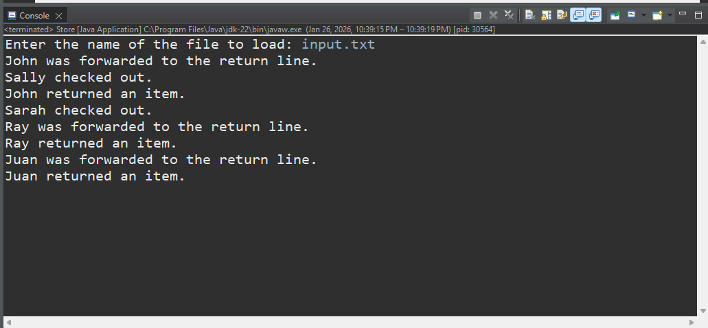
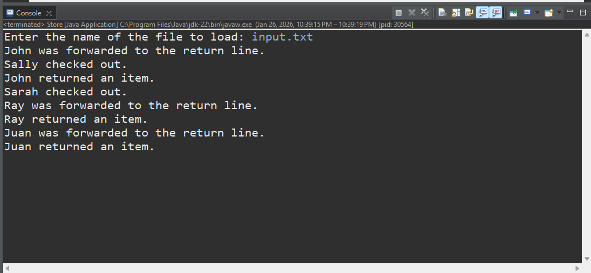

Project Overview
Developed a Java-based store simulation that models checkout and return lines using linked lists.
The program loads customer data from an external input text file (input.txt),
dynamically routes customers based on transaction type, and processes checkout and return operations
following predefined business rules. This project demonstrates file input/output,
object-oriented programming, and queue-based data structures.
Project Images
 

Screenshots showing the program terminal output and the source code.
Skills Learned
- Java Programming
- File Input/Output using text files
- LinkedList and Queue data structures
- Object-Oriented Programming (OOP)
- Algorithmic problem-solving